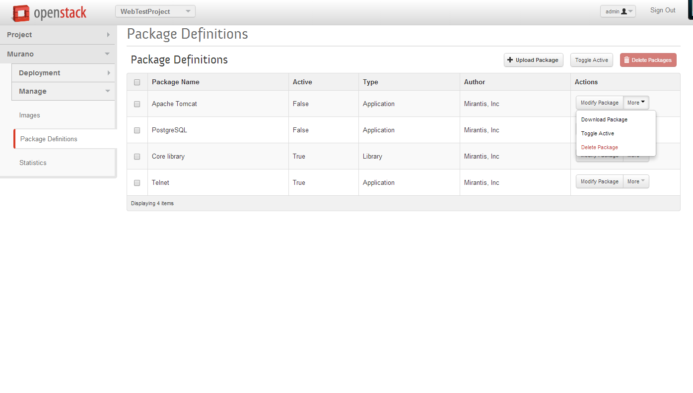
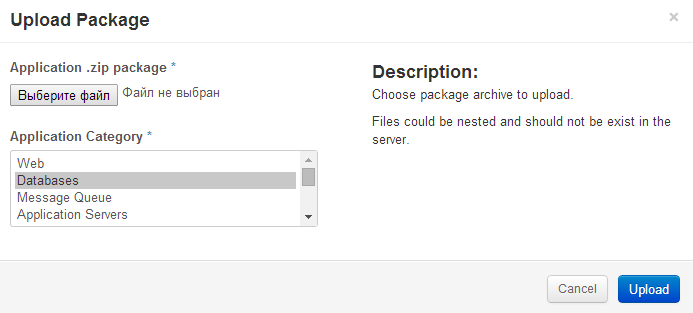
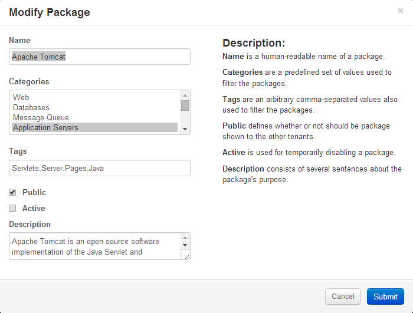

Cloud administrator has rights to manage applications in the catalog: upload new applications, modify existing, disable or delete them. All this actions are available in Murano UI and will be described in this section. Go to the Manage ->Package Definitions page.
|  |
Upload Packageprovides a form for uploading an application package. After this operation your application will be acceptable from application catalog. You'll need to provide path to the package with your application. It should be in a zip format. See here for more information on how to prepare an application package. Also select one category to which your application belongs too.
Toggle Activemakes an application active or disabled depending on the current state.Delete Packagesremoves applications from the catalogModify Packagegives you opportunity to modify meta information about the application. The following properties are allowed to edit:
Name - visible application name
Categories - change application category
Tags - specify comma-separated list of words, associated with the application
Public - indicates access for non-admin users from all tenants
Active - indicates if this application is enabled or disabled
Description - extend information about application, which will be shown at the Application Details page
Download Packagesaves application definition as zip archive, as it was uploaded